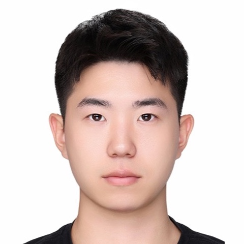
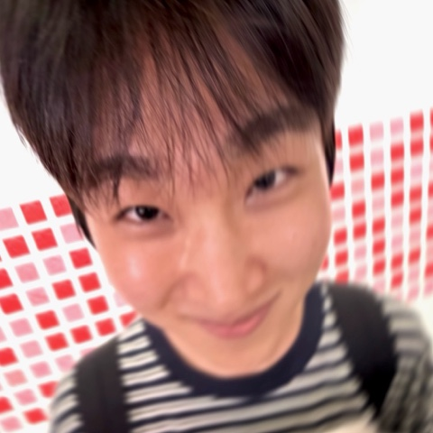
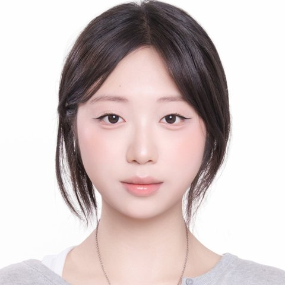

We are SKKU East.
저희는 SKKU East입니다.
Five undergraduate students from Sungkyunkwan University in Seoul, Korea, studying software and AI.
서울 성균관대학교에서 소프트웨어와 AI를 공부하는 학부생 5명입니다.
Through our university's Global Challenge program, we are visiting the U.S. East Coast to answer one question: how does AI move from research to industry to society? We want to see each step in person and learn from the people who make it happen.
학교의 글로벌 챌린지 프로그램으로 미국 동부를 방문해 한 가지 질문의 답을 찾으려 합니다. AI는 어떻게 연구에서 산업으로, 그리고 사회로 이어질까? 그 과정의 각 단계를 직접 보고, 그 일을 해내는 사람들에게 배우고 싶습니다.
#Journey여정
The East Coast is one of the few places where every stage of AI's journey sits on a single train line.
미국 동부는 보스턴, 뉴욕, 워싱턴 DC가 기차로 이어져 있어 AI의 연구, 산업, 정책 현장을 한 번에 둘러볼 수 있는 몇 안 되는 곳입니다.
Universities, research labs and robotics companies turning ideas into working technology.
대학, 연구소, 로봇 기업이 아이디어를 실제로 작동하는 기술로 만드는 곳.
Tech companies and engineering teams delivering AI to millions of users.
테크 기업과 엔지니어링 팀이 수백만 명의 사용자에게 AI를 전달하는 곳.
Standards bodies, policy institutes and public institutions deciding how AI is tested and used.
표준 기관, 정책 연구소, 공공기관이 AI를 어떻게 검증하고 쓸지 정하는 곳.
#Team팀
Students from computer science, AI, and business backgrounds, looking at AI from both the builder's side and society's side.
컴퓨터공학, AI, 경영을 공부하는 학생들이 AI를 만드는 사람의 시선과 사회의 시선에서 함께 바라봅니다.

Kyubeom Kim
김규범
I'm interested in developing software that makes AI systems safer and more trustworthy. In particular, I want to further explore technologies that verify the evidence behind AI-generated responses and protect AI systems against malicious inputs and cybersecurity threats.
AI 시스템을 더 안전하고 신뢰할 수 있게 만드는 소프트웨어 개발에 관심이 있습니다. 특히 AI가 생성한 답변의 근거를 검증하고, 악의적인 입력과 사이버 보안 위협으로부터 AI 시스템을 보호하는 기술을 더 깊이 탐구하고 싶습니다.
Through this visit, I hope to see how institutions and companies in the U.S. approach AI reliability and security.
이번 방문을 통해 미국의 기관과 기업이 AI의 신뢰성과 보안을 어떻게 다루는지 직접 보고 싶습니다.
Eunha Kim
김은하
I'm interested in exploring how emerging technologies can transform creative content and the ways audiences interact with it. My primary interests include generative and multimodal AI, XR, real-time computer graphics, and interactive systems, particularly their potential to create new forms of expression and immersive experiences in performing arts and digital media.
새로운 기술이 창작 콘텐츠와, 관객이 그 콘텐츠와 상호작용하는 방식을 어떻게 바꿀 수 있는지에 관심이 있습니다. 주된 관심 분야는 생성형·멀티모달 AI, XR, 실시간 컴퓨터 그래픽스, 인터랙티브 시스템이며, 특히 이 기술들이 공연예술과 디지털 미디어에서 새로운 표현 방식과 몰입형 경험을 만들어낼 가능성에 주목하고 있습니다.
Through this visit, I hope to learn how these technologies are developed and applied in real-world industries, from technical architectures and development processes to the collaboration between creative and technical disciplines that brings innovative ideas to life.
이번 방문을 통해 이 기술들이 실제 산업에서 어떻게 개발되고 적용되는지, 기술 구조와 개발 과정부터 혁신적인 아이디어를 현실로 만드는 창작과 기술 분야 간의 협업까지 배우고 싶습니다.

Jiwon Seo
서지원
I'm interested in the systems side of AI, from LLM serving down to the processor. I built an on-premise RAG chatbot with an industry partner, serving its models with vLLM on our own GPUs, and I'm now building a gem5-based simulation flow that measures multicore CPU performance, power, and temperature.
LLM 서빙부터 프로세서까지, AI의 시스템 쪽에 관심이 있습니다. 산업체와 함께 온프레미스 RAG 챗봇을 만들어 자체 GPU에서 vLLM으로 모델을 서빙했고, 지금은 멀티코어 CPU의 성능, 전력, 온도를 측정하는 gem5 기반 시뮬레이션 환경을 만들고 있습니다.
On this trip, I want to learn how teams decide where and how to run AI models in production.
이번 방문에서는 실제 서비스 환경에서 AI 모델을 어디서, 어떻게 돌릴지 팀들이 어떻게 결정하는지 배우고 싶습니다.

Jiwoo Lee
이지우
I study Applied Artificial Intelligence at Sungkyunkwan University, focusing on deep learning and applying it through AI service design and prototype development. I'm interested in both multimodal AI research and how organizations use AI to improve their work and shape their IT strategies.
성균관대학교에서 인공지능융합을 전공하며 딥러닝을 중심으로 공부하고, 이를 AI 서비스 기획과 프로토타입 개발에 적용하고 있습니다. 멀티모달 AI 연구와 함께, 조직이 AI로 업무를 개선하고 IT 전략을 세우는 방식에도 관심이 있습니다.
Through this visit, I hope to learn from professionals in these areas and explore where my interests could lead.
이번 방문을 통해 이 분야의 전문가들에게 배우고, 제 관심사가 어디로 이어질 수 있을지 탐색하고 싶습니다.
Jimin Cheon
천지민
I'm interested in AI systems, especially LLM agents and On-Device AI, and how AI software and hardware work together. I'm particularly curious about how research in the U.S. connects closely with industry and turns new ideas into real-world impact.
AI 시스템, 특히 LLM 에이전트와 온디바이스 AI, 그리고 AI 소프트웨어와 하드웨어가 함께 동작하는 방식에 관심이 있습니다. 그중에서도 미국에서 연구가 산업과 긴밀하게 연결되어 새로운 아이디어가 실제 임팩트로 이어지는 과정이 궁금합니다.
Through this visit, I hope to see how AI research is actually done at U.S. universities and companies, and to explore future paths such as graduate school or a career in the U.S.
이번 방문을 통해 미국의 대학과 기업에서 AI 연구가 실제로 어떻게 이루어지는지 보고, 미국 대학원 진학이나 취업 같은 앞으로의 진로도 탐색하고 싶습니다.
#For Mentors멘토님께
We know your time is valuable. Even a short conversation would mean a lot to us and to the students we will share it with back home.
귀한 시간이라는 걸 잘 알고 있습니다. 짧은 대화라도 저희에게, 그리고 돌아가서 이야기를 함께 나눌 학생들에게 큰 의미가 될 것입니다.
- 01A 20–30 minute conversation20~30분의 대화In person during our visit, or online if that is easier for you.방문 기간 중 직접 뵙거나, 편하시다면 온라인으로도 좋습니다.
- 02Your path and your team멘토님의 길과 팀 이야기How you got here, how your team works, and what you would tell students starting out.지금의 자리에 오기까지의 과정, 팀이 일하는 방식, 그리고 이제 막 시작하는 학생에게 해주고 싶은 말.
- 03Questions sent in advance질문은 미리 보내드립니다We will share our questions ahead of time, so there is nothing for you to prepare.질문을 미리 공유드리니 따로 준비하실 것은 없습니다.
#FAQ자주 묻는 질문
How long will it take?시간은 얼마나 걸리나요?
About 20–30 minutes. We are happy to work around your schedule.
20~30분 정도입니다. 일정은 멘토님께 맞추겠습니다.
Where would we meet?어디서 만나나요?
Wherever is convenient for you: your office, a café nearby, or online.
편하신 곳이면 어디든 좋습니다. 사무실, 근처 카페, 온라인 모두 가능합니다.
Will the conversation be recorded or shared?대화를 녹음하거나 공유하나요?
Only with your permission. If we share anything, we will send it to you for review first.
허락해주실 때만 합니다. 공유할 내용이 있으면 먼저 보내드려 확인을 받겠습니다.
What is the Global Challenge program?글로벌 챌린지 프로그램이 무엇인가요?
A program supported by Sungkyunkwan University that sends student teams abroad to explore a topic in depth and bring what they learn back to campus. SKKU, founded in 1398, is one of Korea's leading universities.
성균관대학교가 지원하는 프로그램으로, 학생 팀이 해외에서 한 주제를 깊이 탐구하고 배운 것을 학교에 돌아와 나눕니다. 1398년에 세워진 성균관대학교는 한국을 대표하는 대학 중 하나입니다.
#After the Trip방문 이후
| Feb 20272027년 2월 | Publish a trip report and interview notes on this site (with mentors' permission).방문 보고서와 인터뷰 기록을 이 사이트에 올립니다 (멘토님이 허락하신 내용만). |
| Mar 20272027년 3월 | Host a sharing seminar for students in our department.학과 학생들을 위한 공유 세미나를 엽니다. |
#Contact연락처
Feel free to reach out by email, or connect with any of us on LinkedIn.
이메일로 편하게 연락 주시거나, LinkedIn으로 팀원 누구에게든 연락 주세요.